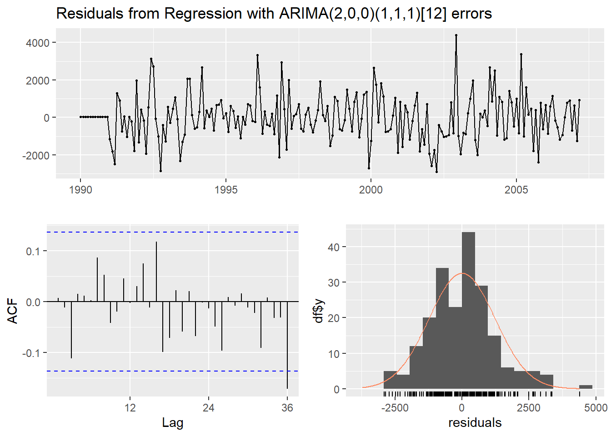
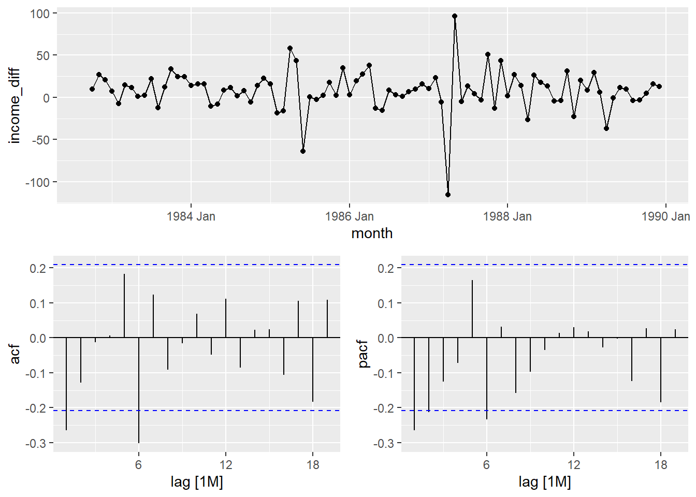

Chapter 8 Neural Network Model
Neural network models are models based on mathematical models of how brains function. They are organized in a network of neurons through layers. The input variables are considered the neurons in the bottom layer. The output variable is the final neuron in the top layer. The layers in between, called hidden layers, transform the input variables through non-linear methods to try and best model the output variable.
From one layer to the next, the neurons from the previous layer are inputs into each neuron of the next layer all linear combined with weights (coefficients). Inside each of the hidden layer neurons, the linear combination of inputs is transformed with a non-linear function. Typically, this function is the logit function, but could be a variety of non-linear transformations. This is then output from each neuron to go into the next hidden layer. The top layer is just a linear combination of all of the transformations of the neurons from the previous hidden layer.
In autoregressive neural networks the bottom layer (input variables) also contains lags of the target variable as possible inputs. The number of lags to include is typically done through trial and error. We can approach this problem similar to ARIMA modeling with correlation plots and automatic selection techniques. However, there are no MA terms in this autoregressive neural networks. For seasonal data we typically include all lags up through one season unless correlation plots say you only need specific ones. We do however need to make our data stationary first since we are dealing with lagged terms of the target variable.
To build an autoregressive neural network in R, we use the nnetar function. This function cannot take differences of your data so we need to input our differenced training data. The p = and P = options specify the number of normal and seasonal autoregressive lags respectively. From there we just use the forecast function from the forecast package to forecast the next 12 time periods (h = 12 option).
set.seed(12345)
NN.Model <- nnetar(diff(training, 12), p = 2, P = 3)
NN.Forecast <- forecast::forecast(NN.Model, h = 12)
plot(NN.Forecast)
However, the nnetar function only forecasts the input. Since our input was the differences, the function forecasts the differences, not the original data. The for loop in the code just calculates the forecasts of the actual data based on these differences. Essentially, to get the first month’s forecast, we just add the first forecasted difference to the last data point in our training dataset. Lastly, we can calculate the MAE and MAPE from these forecasts.
Pass.Forecast <- rep(NA, 12)
for(i in 1:12){
Pass.Forecast[i] <- training[length(training) - 12 + i] + forecast::forecast(NN.Model, h = 24)$mean[i]
}
Pass.Forecast <- ts(Pass.Forecast, start = c(2007, 4), frequency = 12)
plot(training, main = "US Airline Passengers ARIMA Model Forecasts", xlab = "Date", ylab = "Passengers (Thousands)", xlim = c(1990, 2009), ylim = c(30000,80000))
lines(Pass.Forecast, col = "blue")
abline(v = 2007.25, col = "red", lty = "dashed")
# Calculate prediction errors from forecast
NN.error <- test - Pass.Forecast
# Calculate prediction error statistics (MAE and MAPE)
NN.MAE <- mean(abs(NN.error))
NN.MAPE <- mean(abs(NN.error)/abs(test))*100
NN.MAE## [1] 1087.973## [1] 1.66796Finally, we have a model that beats the original exponential smoothing model’s forecasts! Before any problem begins, we do not know which algorithm will win so we try them all.
8.1 Python Code for Neural Networks
8.1.1 AR Neural Networks
import pandas as pd
import numpy as np
import matplotlib.pyplot as plt
import statsmodels.api as sm
from statsmodels.graphics import tsaplots
from statsmodels.graphics import tsaplots
from statsmodels.tsa.seasonal import seasonal_decompose
from statsmodels.tsa.seasonal import STL
from statsmodels.tsa.arima_model import ARMA
from statsmodels.tsa.arima_model import ARIMA
from statsmodels.tsa.statespace.sarimax import SARIMAX
from statsmodels.tsa.holtwinters import SimpleExpSmoothing, Holt, ExponentialSmoothing
import pmdarima as pm
usair = pd.read_csv("https://raw.githubusercontent.com/sjsimmo2/TimeSeries/master/usairlines.csv")
df=pd.date_range(start='1/1/1990', end='3/1/2008', freq='MS')
usair.index=pd.to_datetime(df)
training = usair.head(207)
test = usair.tail(12)
usair['diff'] = usair['Passengers'] - usair['Passengers'].shift(12)
usair['L1'] = usair['diff'].shift()
usair['L2'] = usair['diff'].shift(2)
usair['L12'] = usair['diff'].shift(12)
usair['L24'] = usair['diff'].shift(24)
usair['L36'] = usair['diff'].shift(36)training = usair.head(207)
test = usair.tail(12)
plt.cla()
plt.plot(training["diff"].dropna())
plt.xlabel("Date")
plt.ylabel("Passengers")
plt.title("Seasonal Difference in Airline Passengers")
plt.show()
from sklearn.neural_network import MLPRegressor
X = training.drop(['Month', 'Year', 'Passengers', 'diff'], axis = 1).tail(159)
y = training['diff'].tail(159)
NN_air = MLPRegressor(hidden_layer_sizes = (3,), random_state=123, max_iter = 100000).fit(X, y)X_test = test.drop(['Month', 'Year', 'Passengers', 'diff'], axis = 1)
test['NN_pred'] = NN_air.predict(X_test)## <string>:1: SettingWithCopyWarning:
## A value is trying to be set on a copy of a slice from a DataFrame.
## Try using .loc[row_indexer,col_indexer] = value instead
##
## See the caveats in the documentation: https://pandas.pydata.org/pandas-docs/stable/user_guide/indexing.html#returning-a-view-versus-a-copy## <string>:1: SettingWithCopyWarning:
## A value is trying to be set on a copy of a slice from a DataFrame.
## Try using .loc[row_indexer,col_indexer] = value instead
##
## See the caveats in the documentation: https://pandas.pydata.org/pandas-docs/stable/user_guide/indexing.html#returning-a-view-versus-a-copyPass_pred = training2['NN_pred'] + training2['Passengers']
Pass_pred.index = pd.to_datetime(pd.date_range(start='4/1/2007', end='3/1/2008', freq='MS'))
test['Pass_pred'] = Pass_prederror6 = test['Passengers'] - test['Pass_pred']
MAPE6 = np.mean(abs(error6)/test['Passengers'])*100
MAPE6## 1.3761273058280752plt.cla()
fcast5 = test['Pass_pred']
ax = training["Passengers"].plot(figsize=(12,8))
fcast5.plot(ax = ax,color = "orange")
plt.show()